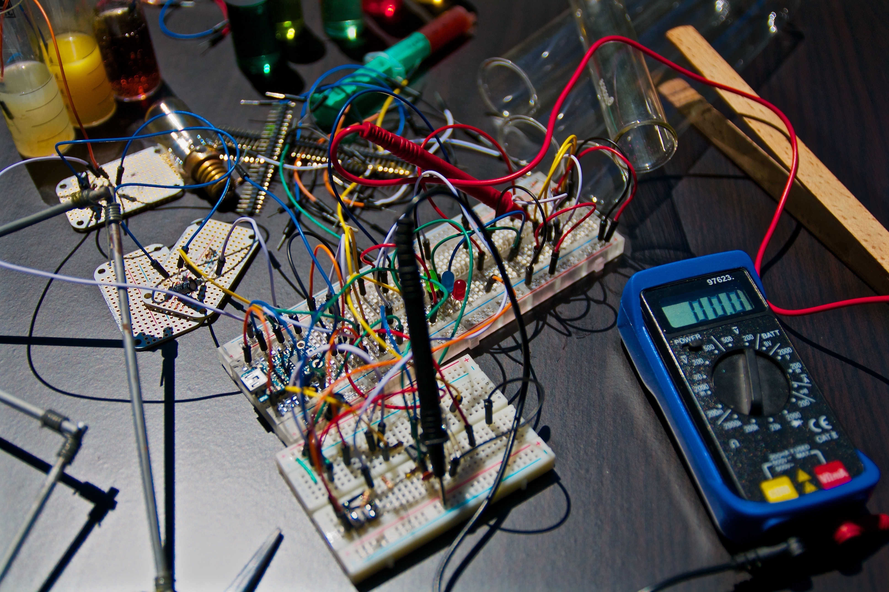

Чому взимку на вікнах з’являються узори?
Майже кожної зими, коли на вулиці мороз на вікнах зявляються красиві зображення.
Для утворення інію на вікнах, як і на деревах, траві, потрібні певні умови.
Іній утворюється з маленьких кристалів замерзлої води.
Коли повітря, що містить багато вологи, що охолоджується до точки замерзання, починає утворюватися іній.
Точка замерзання 0° C на рівні моря. Коли повітря охолоджується, вміст вологи в ньому зменшується.
Надлишок води конденсується на таких об’єктах, як скло. Коли температура опускається нижче 0° С, вода кристалізується.
Іншими словами, кристали льоду покривають поверхню води. Чому ж в мороз з’являються малюнки на шибці?
Самі кристали мають свою структуру, яка визначає малюнок.
Крім того, подряпини на поверхні скла, частинки пилу, повітряні потоки допомагають створювати красиві узори на вікнах.
Чому веселка має форму дуги?
Сонячні промені, проходячи через краплі дощу в повітрі, розкладаються в спектр,
так як різні кольори спектру переломлюються в краплях під різними кутами.
В результаті формується окружність — веселка, частину якої ми бачимо з землі у формі дуги,
а центр окружності лежить на прямій «Сонце — око спостерігача».
Якщо світло у краплі відбивається два рази, то можна побачити дві веселки.

Фізика (від грец. φυσικός природний, φύσις природа)
Природнича наука, яка досліджує загальні властивості матерії та явищ у ній,
а також виявляє загальні закони, які керують цими явищами.
Це наука про закономірності Природи в широкому сенсі цього слова.
Фізики вивчають поведінку та властивості матерії в широких межах її проявів,
від субмікроскопічних елементарних частинок, з яких побудоване все матеріальне
(фізика елементарних частинок), до поведінки всього Всесвіту як єдиної системи (космологія).